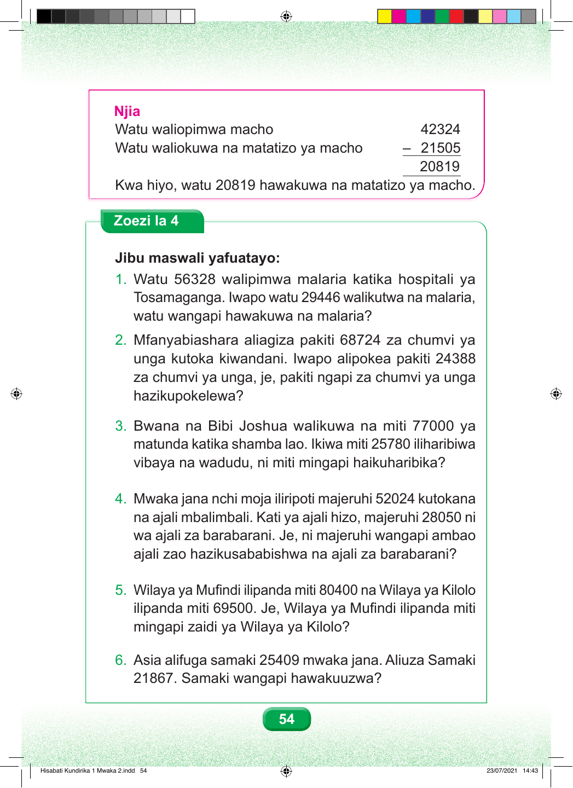

Njia Watu waliopimwa macho 42324 Watu waliokuwa na matatizo ya macho – 21505 20819 Kwa hiyo, watu 20819 hawakuwa na matatizo ya macho. Zoezi la 4 Jibu maswali yafuatayo: 1. Watu 56328 walipimwa malaria katika hospitali ya Tosamaganga. Iwapo watu 29446 walikutwa na malaria, watu wangapi hawakuwa na malaria? 2. Mfanyabiashara aliagiza pakiti 68724 za chumvi ya unga kutoka kiwandani. Iwapo alipokea pakiti 24388 za chumvi ya unga, je, pakiti ngapi za chumvi ya unga hazikupokelewa? 3. Bwana na Bibi Joshua walikuwa na miti 77000 ya matunda katika shamba lao. Ikiwa miti 25780 iliharibiwa vibaya na wadudu, ni miti mingapi haikuharibika? 4. Mwaka jana nchi moja iliripoti majeruhi 52024 kutokana na ajali mbalimbali. Kati ya ajali hizo, majeruhi 28050 ni wa ajali za barabarani. Je, ni majeruhi wangapi ambao ajali zao hazikusababishwa na ajali za barabarani? 5. Wilaya ya Mufindi ilipanda miti 80400 na Wilaya ya Kilolo ilipanda miti 69500. Je, Wilaya ya Mufindi ilipanda miti mingapi zaidi ya Wilaya ya Kilolo? 6. Asia alifuga samaki 25409 mwaka jana. Aliuza Samaki 21867. Samaki wangapi hawakuuzwa? 54 Hisabati Kundirika 1 Mwaka 2.indd 54 23/07/2021 14:43